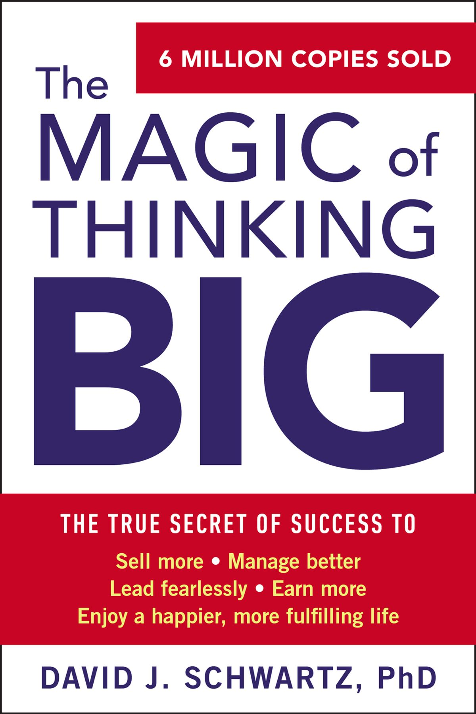
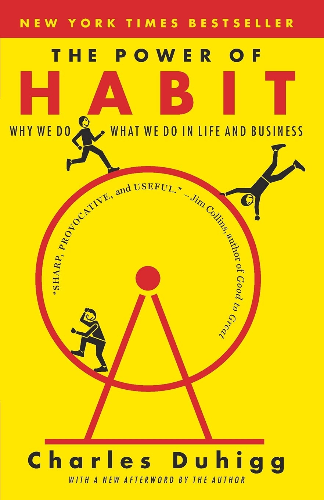
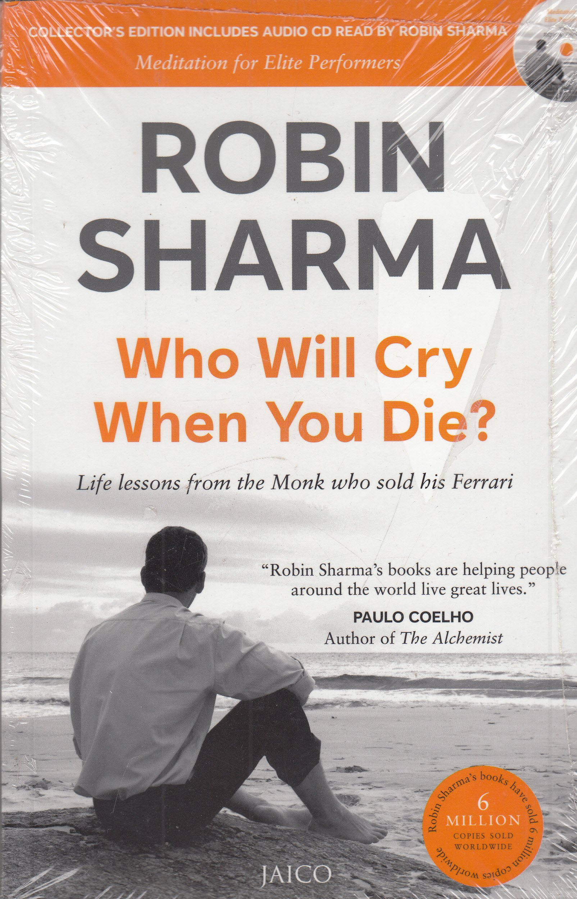
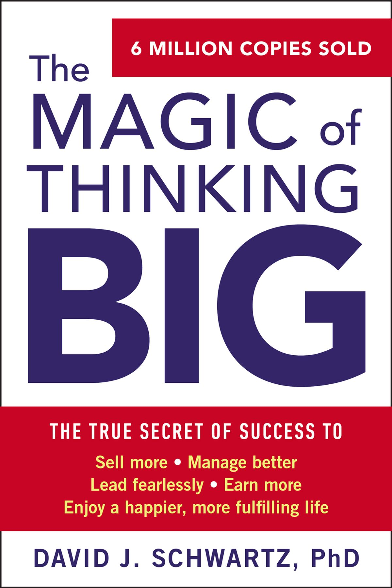
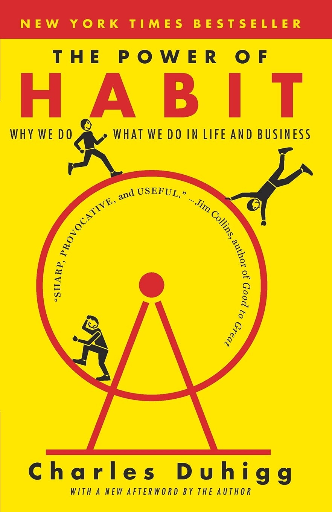
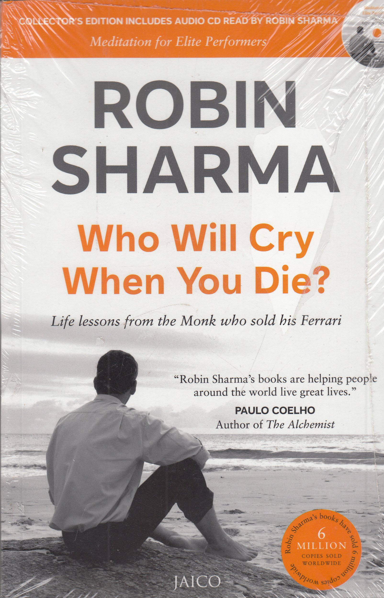

I've Been Thinking
You are the leader you've been looking for.
Starting at the bottom is not about humiliation. It's about humility - a realistic assessment of where you are in the learning curve.
Your life is like a mosaic, a puzzle. You have to figure out where the pieces go and put them together for yourself.
Prayer is talking to God, meditation is letting God talk to you.
Who Will Cry When You Die
Learn to be silent.
Wisdom is knowing what to do next, skill is knowing how to do it, and virtue is doing it.
He who asks may be a fool for five minutes. He who doesn't is a fool for a lifetime.
Son, when you were born, you cried while the world rejoices. Live your life when you die the world cries while you rejoice.
Power Of Habit
Once small win has been accomplished, forces are set in motion that favor another small win.
Genuine change requires work and self-understanding of the cravings behaviours.
Change might not be fast and it isn't always easy. But with time effort, almost any habit can be reshaped.
Champions don't do extraordinary things. They do ordinary things, but they do them without thinking much, too fast for the other team to react.
The Magic Of Thinking Big
The combination of persistance and experimentation Is a winning formula for success.
We learn nothing from telling and talking, but we learn by asking and listening.
Associate with people who can make you see in a different ways.
To be Interesting be interested.
The 48 Laws Of Power
When you meet a swordsman, draw your sword, Do not recite poetry to one who is not a poet.
Keep your friends for friendship, but work with the skilled and competent.
Never assume that the person you are dealing with is weaker or less important than you.
Lord, protect me from my friends; I can take care of my enemies.
Use absence to increase respect and honor.
Strike the shepherd and the sheep will scatter.
Rich Dad Poor Dad
In school we learn that mistakes are bad, and we are punished for making them. Yet, if you look at the way humans are designed to learn, we learn by making mistakes.
I'd rather welcome change than cling to the past.
The poor and the middle class work for money. The rich have money work for them.
Workers work hard enough not to be fired, and owners pay just enough so that workers won't quit.
The Secret
Remeber that your thoughts are the primary cause of everything.
Your power is in your thought's so stay awake. In other words remember to remember.
Be grateful for what you have now. As you begin to think about all the things in you life you are grateful for, you wil be amazed at the never ending thoughts that come back to you.
There is no such things as hopeless situation. Every single circumstances of your life can change!.
The Monk Who Sold His Ferarri
The purpose of life is the life of purpose.
Everything is created twice, first in the mind and then in reality.
The mind is like other muscles in your body. Use it or lose it.
So take time to think. Discover your real reason for being here and then have courage to act on it.
You Can You Will
You can't be in neutral hope to reach your full potential.
If you will get free from what everyone else thinks and start being who you were created to be, you will rise to a new level.
Do not settle where you are you have seed of greatness inside you.
You need to be around people who know more than you and have more talent than you, Don't get intimidated by them; be inspired.
You Can Win
The best teacher will not give you something to drink, they will make you thirsty.
Under Adverse conditions - some people break down, some break records.
An Uneducated thief may steal goods from the train but An Educated one may steal the entire train.
Everything is created twice; first in the mind and then in reality.

 




